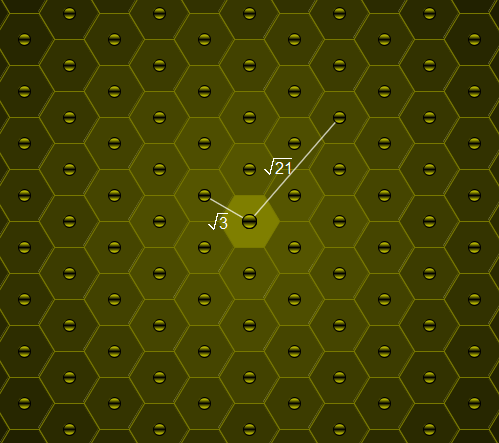

Distances in a bee's honeycomb
Problem 354
Published on Sunday, 16th October 2011, 07:00 am; Solved by 261; Difficulty rating: 65%Consider a honey bee's honeycomb where each cell is a perfect regular hexagon with side length 1.

One particular cell is occupied by the queen bee.
For a positive real number
L
, let B(
L
) count the cells with distance
L
from the queen bee cell (all distances are measured from centre to centre); you may assume that the honeycomb is large enough to accommodate for any distance we wish to consider.
For example, B(√3) = 6, B(√21) = 12 and B(111 111 111) = 54.
Find the number of L ≤ 5·10 11 such that B( L ) = 450.